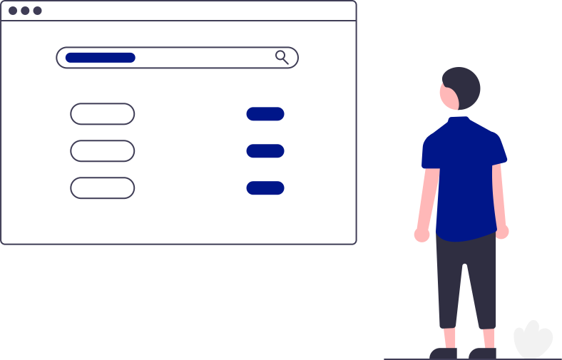

<ion-menu contentId="menu">
  <ion-header>
    <ion-toolbar class="profile">
      <ion-avatar slot="start">
        
      </ion-avatar>
      <ion-label slot="start">{{user_name}}</ion-label>
    </ion-toolbar>
  </ion-header>
  <ion-content class="ion-padding">
    
    <p class="title">Pages</p>
    <ion-item tappable lines="full" (click)="shelves()">
      <ion-icon name="albums-outline" slot="start"></ion-icon>
      <ion-label slot="">Shelves</ion-label>
      <ion-icon name="chevron-forward-outline"></ion-icon>
    </ion-item>
    <ion-item tappable lines="full" (click)="users()">
      <ion-icon name="people-outline" slot="start"></ion-icon>
      <ion-label slot="">Users</ion-label>
      <ion-icon name="chevron-forward-outline"></ion-icon>
    </ion-item>
    <p class="title">Options</p>
    <ion-item tappable lines="full" (click)="profile()">
      <ion-icon name="create-outline" slot="start"></ion-icon>
      <ion-label slot="">Profile</ion-label>
      <ion-icon name="chevron-forward-outline"></ion-icon>
    </ion-item>
    <ion-item tappable lines="full" (click)="settings()">
      <ion-icon name="options-outline" slot="start"></ion-icon>
      <ion-label slot="">Settings</ion-label>
      <ion-icon name="chevron-forward-outline"></ion-icon>
    </ion-item>
    <p class="title">Logout</p>
    <ion-item tappable lines="full" (click)="logout()">
      <ion-icon name="log-out-outline" slot="start"></ion-icon>
      <ion-label slot="">Logout</ion-label>
      <ion-icon name="chevron-forward-outline"></ion-icon>
    </ion-item>

  </ion-content>
</ion-menu>